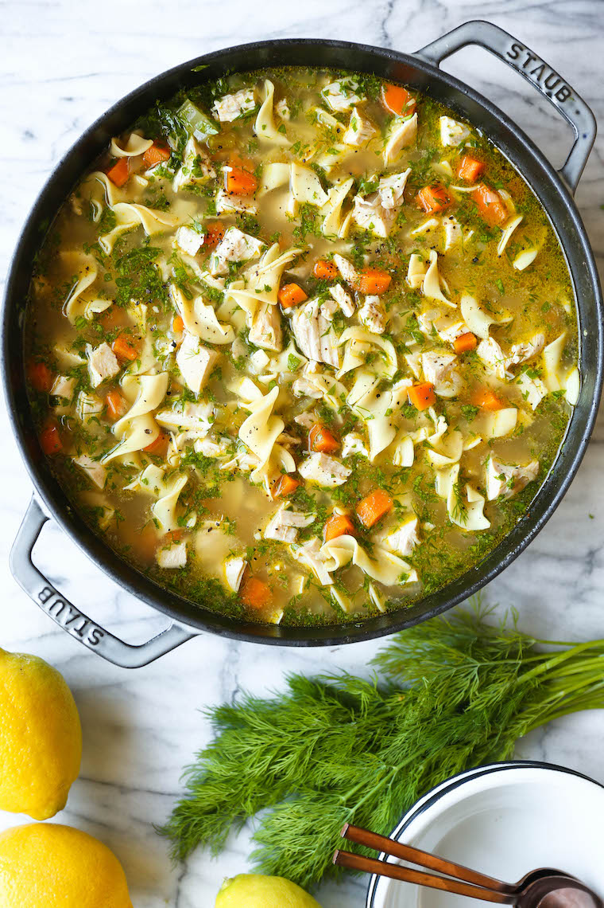

Chicken Noodle Soup

From scratch chicken noodle soup recipe
This soup is delicious, easy and relatively quick to make. It starts with a mirepoix. Add your spices, broth and/or water and chicken to cook in the broth which will add plenty of flavor. Once the chicken is done and ready to shred, you can cook the noodles in the soup. Finish with a squeeze of lemon for extra goodness!
Ingredients
- 2 tbsp butter
- 1 onion
- 2-3 carrots
- 2 ribs celery
- 3 garlic cloves
- 1 tbsp dried parsley
- 1 tbsp dried basil
- 8 cups chicken stock and/or water
- 2 lbs. chicken breasts or thighs
- 2 bay leaves
- 2 cups egg noodles
- 1 tbsp freshly squeezed lemon juice
- Salt and pepper to taste
Steps
- Dice the onion, carrots and celery. Heat the butter in a dutch oven. Add the mirepoix and saute for 3 minutes.
- Add garlic and spices, saute about a minute.
- Add chicken stock, chicken and bay leaves.
- Bring to a boil, reduce heat and simmer, covered, until the chicken is cooked through, about 20 minutes.
- Remove chicken and shred or dice.
- Bring the soup to a boil and add the noodles until tender, about 5 minutes.
- Add the chicken back to the soup. Taste for seasoning and add salt and pepper. Add the lemon.
- Serve with buns and enjoy!